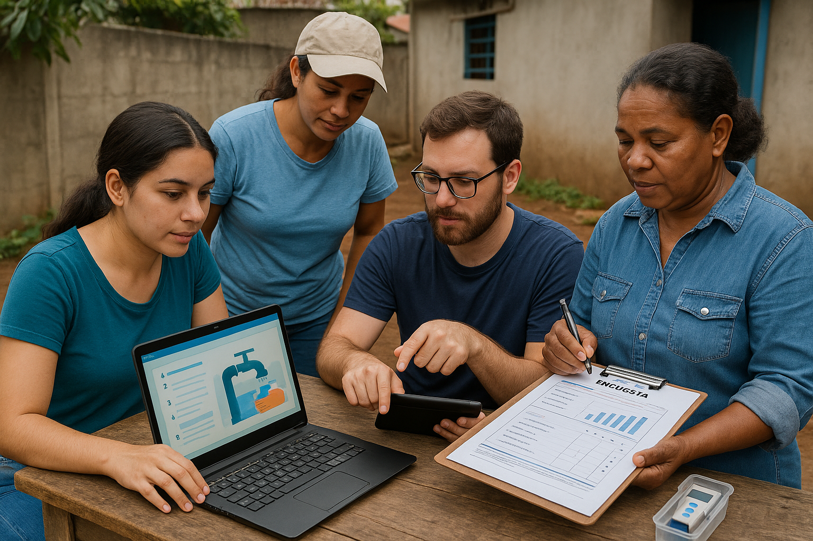

Cómo Trabajamos
Nuestra metodología se basa en la investigación comunitaria, el diseño de software educativo y el análisis de datos. Creamos guías prácticas de saneamiento, facilitamos la participación ciudadana y evaluamos el impacto de nuestras acciones.
Trabajamos mano a mano con comunidades locales para identificar sus necesidades hídricas específicas, utilizando encuestas, talleres y entrevistas. Este enfoque participativo asegura que nuestras soluciones sean culturalmente apropiadas y efectivas.
Desarrollamos herramientas digitales, como aplicaciones móviles y plataformas web, para educar sobre el uso responsable del agua y el saneamiento. Estas herramientas están diseñadas para ser accesibles, incluso en áreas con conectividad limitada.
A través del análisis de datos, monitoreamos la calidad del agua, el consumo y los resultados de nuestros proyectos. Esto nos permite medir el impacto, ajustar estrategias y compartir aprendizajes con otras organizaciones y comunidades.